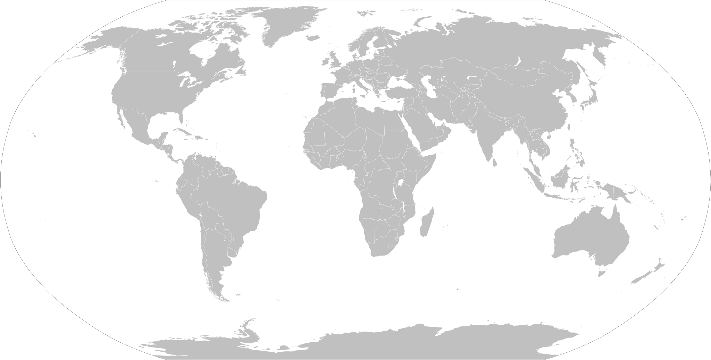

Our Markets


顶级金融求职顾问 · 双语服务
Pacific Gateway Careers is a boutique career consultancy for Chinese international students and graduates targeting top finance roles in Australia and the United States. Our consultants have walked the exact same path and landed the offers. Now, we help our students do the same.
"We've been exactly where you are."
Years ago, each of us went through finance recruitment in Australia and the United States as students, building from scratch, without a network, without a clear roadmap, learning through trial and error what it actually takes to compete for the most coveted roles in the industry. Through persistence, experimentation, and a lot of late nights, we built up a wealth of knowledge, resources, and strategies, and eventually landed offers at some of the most competitive firms in the world.
Along the way, we watched classmates, peers, close friends, even family members, approach the same process without structure or direction. Talented people who deserved those roles, but never got the guidance to compete for them. That never sat right with us.
Pacific Gateway Careers exists because no student should have to figure this out alone. We built the resource we wished we'd had.
Unlike generic careers services, every Pacific Gateway Careers consultant is a bilingual finance professional who navigated the exact recruitment journey you're on, as an international student, in Australia and the US.
Our consultants hold or have held roles at the exact firms you're targeting. We know how these banks actually hire: what they're looking for beyond the CV, and how to stand out as an international candidate. Many of our consultants have also been directly involved in junior recruitment at their firms, giving you a genuine insider perspective on how hiring decisions are actually made.
All of our consultants are fully comfortable in both English and Mandarin. We'll work with you to sharpen your professional English for interviews, presentations, and networking, while always having the flexibility to explain complex concepts, frameworks, or feedback in Chinese so nothing gets lost in translation.
Two of the world's most competitive finance markets. Despite both being English-speaking, they are very different when it comes to recruitment opportunities, application frameworks, interview styles, and hiring processes. We provide market-specific guidance on recruitment cycles, visa considerations, networking strategies, and firm culture, so you're never applying a one-size-fits-all approach to the wrong market.
Many recruitment consultancies stop at interview prep. We don't. From the very first conversation about which firms to target, through CV and cover letter crafting, online assessments, networking, every round of interviews, and all the way through to reviewing and signing your full-time offer, we are with you at every single step. Our job isn't done until you've accepted the role you want.
Every prospective candidate begins with a 30-minute screening call with one of our consultants. We take the time to understand your background, discuss your goals, and be honest about where you stand. We only take on students where we have strong conviction that we can help them land their target roles, which is why we've maintained an 88% placement rate so far. You're never just a number here.
Finance recruitment evolves fast. Hiring volumes shift, interview formats change, and firms update what they look for cycle to cycle. Our consultants are active industry professionals, so the guidance you receive is never recycled from years past. We know what's happening in the current cycle and where the real opportunities are, so you're always one step ahead.
Based on our expertise, the finance recruitment process involves 9 key components and steps. We highly recommend students build a strong foundation in all 9 components in order to rank ahead of other candidates and land their target roles. All our consultants have not only leveraged this structure to land top finance jobs in Australia and the USA, but have also coached several international students to achieve the same success.
The right starting point determines everything. We help you map the finance landscape, from bulge bracket banks to boutique advisory firms and Big 4, and identify the companies and roles that best match your background, visa status, and career ambitions. Applying strategically beats applying broadly every time.
A finance CV is a very different beast from a graduate resume. We rewrite and optimise your documents to meet the exacting standards of investment banks, Big 4 firms, and asset managers, using formats and language that hiring managers respond to. We also craft tailored cover letters that speak to each firm's culture, giving you a complete package.
In finance, who you know matters. We teach you how to identify and approach professionals at target firms, craft cold outreach that gets responses, and build a LinkedIn presence that puts you on recruiters' radars. A well-executed coffee chat can be the difference between an application and a referral.
HireVue, Pymetrics, numerical reasoning, situational judgement, and case studies. We've completed them all. We prepare you with practice sets, proven strategies, and the pattern recognition needed to score in the top percentile and clear the first filter.
One-way video interviews are now standard at most major firms, and they're surprisingly easy to fail without preparation. We coach you on structure, delivery, framing, and the subtle cues that assessors look for, so you come across as confident, articulate, and memorable even without a live interviewer in the room.
Competency and motivational questions are the backbone of every finance interview. We help you build a compelling story bank using the STAR framework, craft authentic answers to the toughest questions, and position your background in a way that resonates with GS, JPMorgan, and Big 4 interviewers.
From DCF and LBO to accounting fundamentals and market knowledge, technical rounds separate candidates who prepared from those who didn't. We drill you on the exact question types used by each firm, build your conceptual fluency, and ensure you can think through problems under live pressure.
Knowing the answer and performing under interview pressure are two different skills. Our consultants, many having sat on both sides of the table, run full-length mock interviews that replicate real firm conditions, then deliver structured, honest feedback so you improve with every session.
Converting an internship into a graduate offer is a skill in itself, and one that many international students underestimate. We coach you on how to stand out during the rotation, build the right internal relationships, navigate mid-internship reviews, and avoid the mistakes that cost candidates a return offer.
Guidance on graduate visa pathways, work rights, and employer sponsorship options in Australia and the United States, so your job search accounts for your immigration timeline from day one.
Once the offer arrives, the negotiation begins. We advise on base salary, signing bonuses, and leave entitlements, and coach you on how to negotiate confidently without jeopardising your offer.
Finance roles expect day-one proficiency in Excel and PowerPoint. We run targeted training sessions covering financial modelling in Excel and the slide-building standards used in investment banking and consulting.

Australia is one of Asia's most sought-after finance markets for international students, offering genuine access to world-class institutions across investment banking, Big 4 advisory, and asset management. Its recruitment cycle is highly structured and timeline-driven, and we know it intimately: when to apply, which firms to prioritise, and how to position yourself compellingly in Sydney or Melbourne.
Relative to the United States, Australia is a smaller market with a more limited number of internship and graduate openings each cycle, which makes the competition for each role considerably more intense. In this environment, standing out requires more than a polished CV. Australian hiring managers place meaningful weight on individuality, genuine personality, and interpersonal presence. Candidates who present a distinctive, well-rounded profile consistently outperform those who rely solely on credentials. Simply mirroring what every other applicant submits will rarely be sufficient to land your target role.
The United States remains the world's preeminent finance market, home to the largest concentration of global banks, asset managers, and financial institutions across New York, Chicago, San Francisco, Boston, and beyond. Breaking in as an international student demands a high level of preparation and precise strategic positioning. Our consultants have first-hand experience navigating the US superday, OCI recruiting process, and bulge bracket hiring cycles.
Unlike Australia, the US market offers significantly more openings across a far greater number of financial centres and firm types. The approach to recruitment here is correspondingly different: there is less emphasis on individual differentiation and greater focus on demonstrating exceptional technical and behavioural fundamentals across the 9 core recruitment categories we have identified. Firms at this level recruit at scale and are looking for candidates whose profile closely matches the archetype of their typical junior hire or intern class. Getting those fundamentals right, consistently and convincingly, is what separates successful candidates from the rest.
Our team is intentionally small and senior. Every consultant is a bilingual finance professional who completed their own journey and came out with top-tier offers.
To protect their professional relationships, our consultants prefer to stay anonymous, and we respect that. What we can tell you is that every person on this team has personally navigated the exact recruitment process you're about to go through, and landed at some of the most competitive firms in Australia and the United States. The profiles below are representative of their backgrounds. The specifics have been adjusted to preserve anonymity, but the calibre is real.
A clear, structured process designed to maximise your chances at every stage of recruitment.
Submit your name, CV, education and work history, current situation, and recruitment goals. Scan our WeChat QR code so a consultant can reach out directly.
Your consultant reviews your submission and organises a free 30-minute call to discuss your situation and a proposed recruitment plan, tailored to your profile, and flexible to adjust at any time.
Begin targeted lessons and preparation designed specifically for you, building the strongest possible candidacy so you're ready to apply and interview with confidence.
You land your target offers and start your dream full-time career in finance. This is the moment everything was building towards.
Contract negotiation and on-the-job coaching to ensure you're well prepared to perform and succeed in the role you've earned.
A small but growing collection of outcomes from our first cohort of clients. Every story is real.
I had no idea where to even start with IB recruitment in Australia. My consultant walked me through the entire process, from building a finance CV from scratch to preparing for investment banking superdays and final round interviews. I got a summer analyst offer after four months of working together.
I never understood how to frame my answers to behavioural questions so I just ended up telling long stories with no point. My consultant taught me how to correctly frame and deliver interview responses confidently and effectively, and I was able to practise this a lot in the mock interviews. The mock interviews were more intense than the real thing, and by the time I sat my Big 4 interviews, I felt totally prepared and ended up with three offers. Being able to debrief in Mandarin after each session made a huge difference for me.
I came to Pacific Gateway Careers after failing to land any interviews from the Big 4 Banks and Big 4 accounting firms in Australia. We completely reworked my story, my CV, my interview answers and my approach to recruitment. When I applied again the next round, I got interviews from four of these companies and got two offers. Honestly couldn't have done it without the support. They genuinely cared about the outcome.
I came to PGC after failing to land any internships in my penultimate year of university. The consultant I had was very patient and did not judge me at all, gradually helping me identify and work through all my weaknesses and calming my anxiety when my first few interviews were still a failure. I had wanted to give up halfway through but the PGC team was very encouraging throughout the process, and I eventually landed a finance offer with a big firm that I am really happy with!
The consultants at PGC are all really successful, qualified and knowledgeable. Sometimes it took longer than proposed to cover certain topics, but I must admit that the consultants I had were super detailed with their advice, and their work paid off when I landed an offer at one of the Big 4!
These guys are masters at revising CVs and Cover Letters. I was barely getting any interviews at all for half a year, and then after I worked with the consultants at PGC I immediately noticed a significant increase in the amount of responses and interviews I received from my applications. It still took a few tries to finally land an offer, but I couldn't have done it without PGC's help.
At first, I was very skeptical of the program PGC offered me and whether all the content was really useful. However, after going through the entire program, I can confidently attest that each component represents an integral step in the finance recruitment process, and was very necessary in order for me to land my dream role. The mock exams were particularly helpful to bring everything together and complete my preparation.
Everything you need to know before booking your free consultation.
We don't publish our pricing publicly. Our programmes are tailored to each client's background, goals, and the level of support required. Pricing is discussed transparently during your free consultation, with no obligation to proceed. We offer a range of engagement structures to suit different needs and timelines.
Yes. We work with students and graduates regardless of where they're currently located. All of our sessions are conducted remotely via video or phone call, so geography is no barrier. Our focus is on preparing you to compete for roles in Australia and the United States, wherever you're based right now.
It depends on where you're starting from and how far away the next recruitment cycle is. Engagements typically run anywhere from 6 weeks to 6 months. Some students work with us intensively in the lead-up to applications and interviews; others prefer a longer-term structured approach starting a year out. We'll recommend what makes sense for your situation during the initial consultation.
Finance recruitment is competitive and we can't guarantee outcomes. No honest consultancy can. What we can guarantee is that you'll be significantly better prepared than you would be going it alone. In cases where a client doesn't land their target role in a given cycle, we continue to support them through the next round. We're invested in your outcome, not just your enrolment, and we promise to never give up as long as you don't.
We work across a wide range of competitive business and finance roles in Australia and the US. This includes investment banking, Big 4 accounting and advisory, asset management, corporate finance, global markets, private equity, management consulting, corporate development and strategy, and marketing. If you're targeting a selective, competitive role in the business or finance space, there's a strong chance we can help. During your free consultation we'll assess your goals and be upfront about where our expertise is best matched to your situation.
University careers centres provide general guidance across all industries and all students. Our consultants are active finance professionals who have personally landed roles at the firms you're targeting, and in many cases have been directly involved in hiring at those firms. Every piece of advice is specific, current, and based on real experience inside the recruitment process you're about to go through.
Not at all. While our consultants have a particular understanding of the challenges faced by students of Chinese background navigating Western finance markets, we work with any motivated student or graduate who is serious about breaking into competitive finance roles in Australia or the US. The quality of our guidance is what matters, not your background.
Book a free 30-minute consultation using the button below. Tell us about your background and goals, and one of our consultants will be in touch within 24 hours to confirm a time. There's no commitment and no cost. Just an honest conversation about where you stand and how we can help.
Book a free 30-minute consultation. We'll assess your profile, identify your strongest target roles, and explain exactly how we'd approach your recruitment. No obligation, no pressure.
Available via WeChat · WhatsApp · Email | 微信 · WhatsApp · 电子邮件